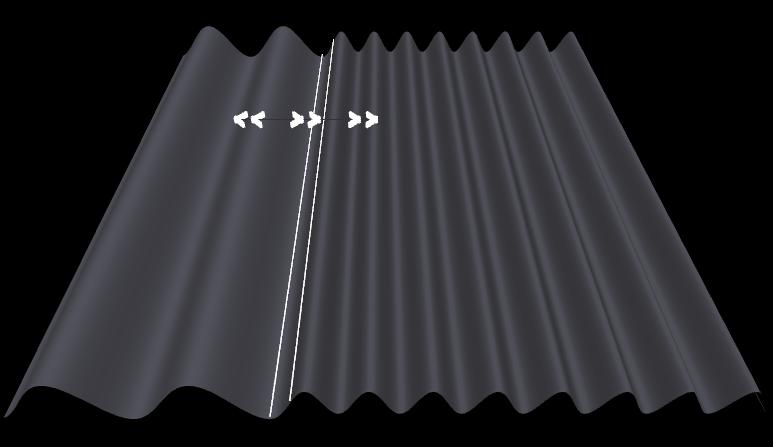

Definitions
Angle of incidence = angle between the incident wave vector and the normal to the interface
n1 = index of refraction of Medium 1 (medium on left)
n2 = index of refraction of Medium 2 (medium in middle)
n3 = index of refraction of Medium 3 (medium on right)
Image 1: Frustrated Total Internal Reflection
Angle of incidence = 42.0 degrees, n1 = 1.50, n2 = 1.00, and
n3 = 1.50. Only the incident wave is shown in the first medium.
To download the high resolution image, copy the following link into your
Image 2: Frustrated Total Internal Reflection
Same parameters as for Image 1. Only the reflected wave is shown in the first medium.
To download the high resolution image, copy the following link into your

Image 3: Anti-reflection Coating
Wavelength = 18.0 (arbitrary units), normal incidence, n1 = 1.0,
n2 = 1.50, n3 = 2.25, and d = 3.00 (arbitrary units). Only
the incident wave is shown in the first medium.
To download the high resolution image, copy the following link into your
Image 4: Anti-reflection Coating
Same parameters as for Image 3. Only the reflected wave is shown in the first medium. Note that there is no
reflected wave.
To download the high resolution image, copy the following link into your